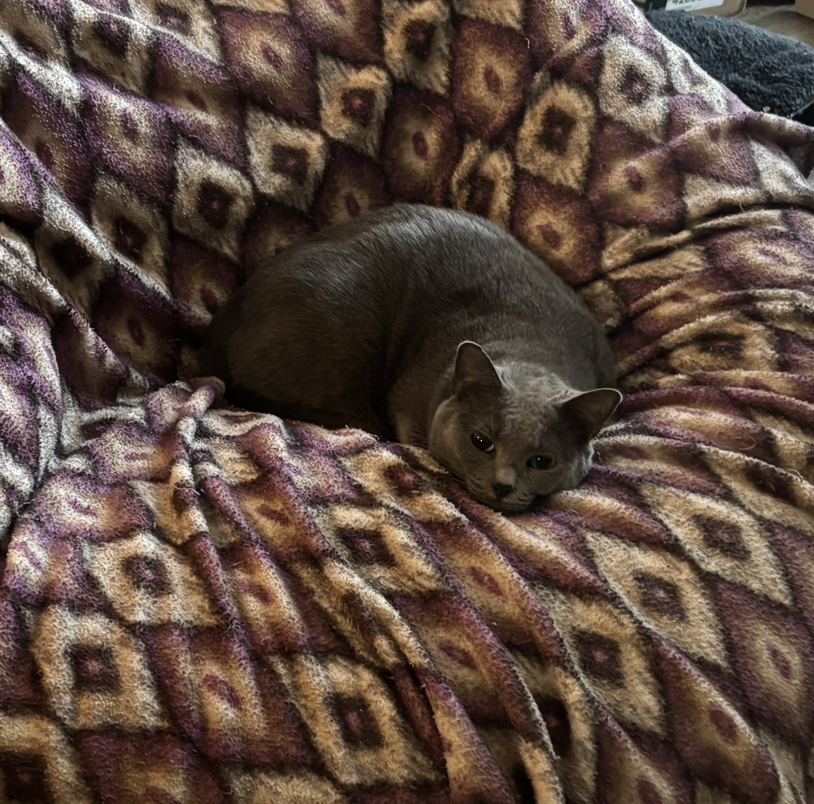

About Me
I am a transfer student with a strong passion for design. I graduated from Collin College with an AS degree in Communication Design. After gaining a foundation in practical skills, I came to UTD to expand my areas of interest. I enjoy learning and problem solving. My overall goal is to expand my knowledge and design creative solutions that make an impact. I included a picture of my cat Athena.
Hobbies & Interests
- Video Games
- Cooking
- Crafting
